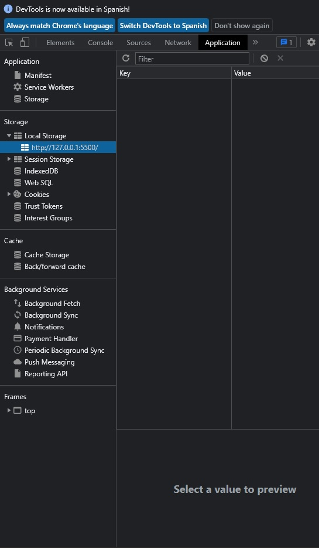
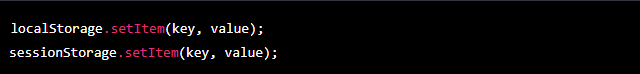
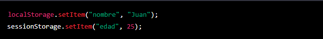
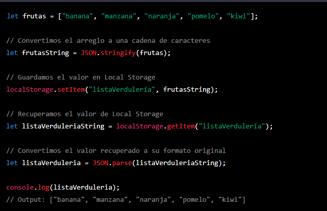
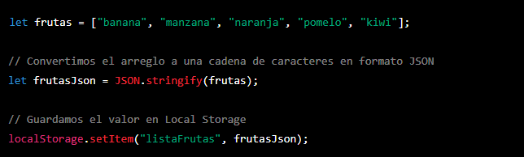
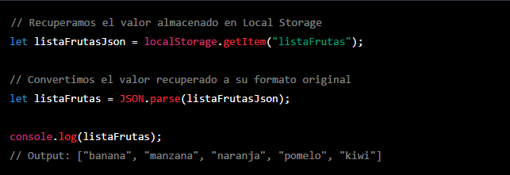

Temario de la clase:
- Almacenamiento local en JS
- localStore/sessionStorage y metodos mas utilizados
- JSON
Almacenamiento local en JS
Una de las características importantes de JavaScript es su capacidad para almacenar datos localmente en el navegador del usuario.
El almacenamiento local del navegador es un espacio disponible en el dispositivo del usuario en el que se pueden guardar datos. Estos datos pueden ser recuperados y utilizados en una sesión de navegación posterior, lo que permite a las aplicaciones web guardar información del usuario y utilizarla para personalizar su experiencia.
Existen dos tipos de almacenamiento local en JavaScript: el almacenamiento de sesión y el almacenamiento local. El almacenamiento de sesión se utiliza para guardar datos temporalmente durante una sesión de navegación específica. Una vez que el usuario cierra el navegador, los datos se eliminan. Por otro lado, el almacenamiento local se utiliza para guardar datos de forma permanente en el dispositivo del usuario.
Cada almacenamiento local es independiente en relación al dominio. Esto significa que los datos almacenados en un dominio específico no están disponibles para otros dominios. Esto garantiza la privacidad y seguridad de los datos del usuario.
En el panel de herramientas del desarrollador dentro del navegador (devtool) hay una seccion llamada "Applicacion" donde podemos encontrar el almacenamiento local y el almacenamiento de la sesion.
localStorage/sessionStorage y metodos mas utilizados
El objeto localStorage y sessionStorage son funcionalidades integradas de JavaScript que permiten guardar datos en el dispositivo del usuario de forma permanente o temporalmente, respectivamente bajo el formato de clave-valor.
Metodos mas populares:Cabe aclarar que los metodos para localStorage y sessionStorage son los mismos y valen para ambos por igual a continuacion veremos los metodos mas utilizados.
setItem es un método de ambos localStorage y sessionStorage que se utiliza para almacenar información en el navegador. La sintaxis es la siguiente:
getItem se utiliza para recuperar información almacenada en el navegador. La sintaxis es la siguiente:
removeItem es un método de javascript que se utiliza para eliminar un item específico almacenado en localStorage o sessionStorage. Es importante mencionar que este método solo elimina el item especificado, no todo el contenido almacenado.
clear es un método de javascript que se utiliza para eliminar todo el contenido almacenado en localStorage o sessionStorage. Es importante mencionar que este método elimina todo el contenido almacenado, no solo un item específico.
El Local Storage solo permite guardar valores en formato de cadena de caracteres, si intentamos guardar un valor diferente a esto, este pierde su forma original y no se puede recuperar. Es importante tomar en cuenta esto al momento de guardar valores diferentes a strings en Local Storage, ya que si no se convierten a un formato apropiado para su almacenamiento, no podremos utilizarlos correctamente en el futuro.
Por ejemplo, si queremos guardar un arreglo de frutas en Local Storage, debemos convertirlo a una cadena de caracteres antes de guardarlo. Una vez recuperado el valor, debemos convertirlo de nuevo a su formato original para poder utilizarlo correctamente.
JSON
JSON es un formato de texto plano que se utiliza para representar datos estructurados. Es una abreviación de JavaScript Object Notation, ya que se utiliza ampliamente en JavaScript para transmitir y almacenar datos.
Una de las principales ventajas de JSON es que agiliza la transmisión de datos, ya que permite transmitir información en un formato legible y fácil de procesar. Además, JSON es un formato estandarizado, lo que significa que puede ser leído y utilizado por diferentes lenguajes de programación.
Para poder utilizar JSON en JavaScript, tenemos a disposición dos métodos: JSON.stringify() y JSON.parse(). El primero nos permite convertir un objeto JavaScript en una cadena de caracteres en formato JSON, mientras que el segundo nos permite convertir una cadena de caracteres en formato JSON en un objeto JavaScript.
JSON.stringify es una función que permite convertir un valor en JavaScript, como un objeto o un arreglo, en una cadena de caracteres en formato JSON. Esto es útil para almacenar datos en una base de datos o transmitirlos a través de una red.
JSON.parse es una función que permite convertir una cadena de caracteres en formato JSON en un valor en JavaScript, como un objeto o un arreglo. Esto es útil para recuperar datos almacenados en una base de datos o recibidos a través de una red.
